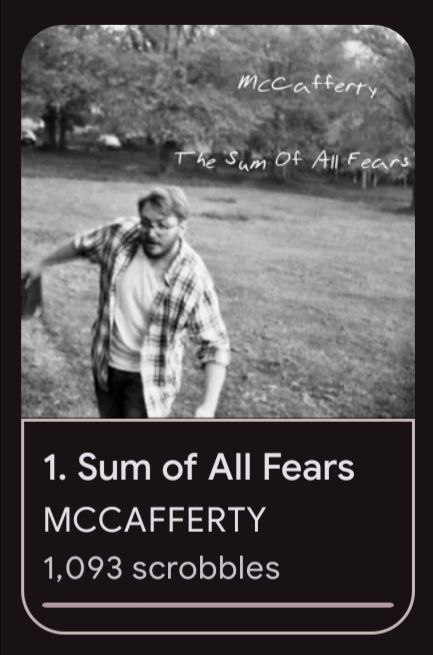

i hate js
main / blogon Oct 14, 2023 22:05
midwest emo and why nick hartkop should be put down
ain't it crazy how you lose will in humanity seeing the music you like get turned to shit by its own authors? well its really fucking common!!!!
mccafferty
he is the single worst humanbeing alive in the music industry, it's genuinely unbelievable that's acceptable by anyone.

nick hartkop - the lead member, singer, frontman or whatever you wanna call him of the band
here's a nice, organized, shortened list of what he did
- mentally abused members of the band
- abused his ex in all the ways possible
- pretended to fix himself (obviously a lie)
- emotionally manipulated friends into thinking he's the victim
- emotionally manipulated fans into thinking he's the victim
i'd say you watch this for a bigger list of things he's done
and read this thread to know how people think of him these days
i've been only streaming their music unofficially - that way, that asshole doesn't get any of my money
being a part of my self-hating childhood they have a lot of my memories tied to [doing bad things].
i don't even [do bad things] that much anymore??? thank GOD i don't listen to straight up emo music anymore
with those kinda lyrics, then i'd give anyone full rights to bully me
but god DAMN can that man not sing and holy shit he defoes can!!! here are their top songs (absolutely subjective)
- sum of all fears//
- the end
- excptionally unexceptional (that's how it's spelled. is he stipid?)
- great
- yarn//
- strain
- scotland
- windmill
- house w no doorbell// unforgivable curse #3 (LMAOOOOO)
the worst part is them dropping a new album. i'm typing this out before hearing all of it because im scared of actually liking it
jank/panucci's pizza
15m on their top streamed song, then why the FUCK did they quit? are they stupid?
well yeah actually, all of it apparently. idk anything yet tho :(
ill continue the post once i watch a documentary, but apparently someone is a nonce as well. could you believe that? the only guys i still had hope in, damn